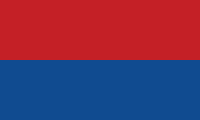

Candidatos presidenciales

|

|

|

|
Encuesta
| Bandera | Candidato | Encuesta 1 | Encuesta 2 |
|---|---|---|---|

|
Rodrigo Chaves | 1% | 5% |
| Figueres | 14% | 17% | |
| Fabricio Alvarado | 13% | 20% | |
|  | Lineth Saborío | 5% | 16% |